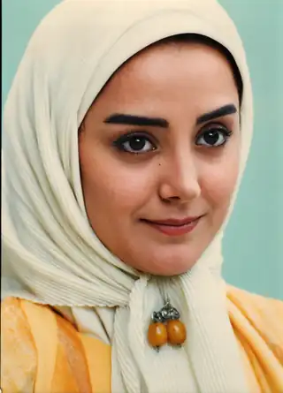
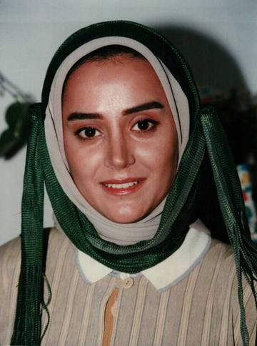
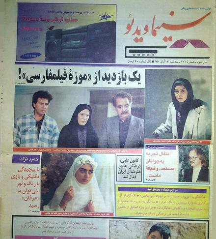
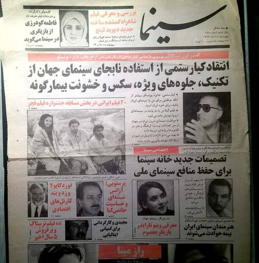

Film Archive · 1376 / 1997
The Eastern Womanزن شرقی
A small surviving record of one film and one character, presented not as a complete album but as fragments that still carry the atmosphere of the work.
Production Record
A Place in the Story
The Eastern Woman is a 1997 feature film directed by Rambod Lotfi. Mina Lakani appears as Zohre Parsa.
Surviving public records identify the film as an 81-minute social drama. What remains here is intentionally selective: enough to preserve the identity of the work without pretending that a complete production archive survives.
Character Preparation
Studies for a Character
Two surviving makeup tests offer a quiet glimpse of the visual preparation for Zohre Parsa before the finished performance.


The differences in makeup, color, and styling are preserved as part of the preparation process.
Press & Published Record
In Print
Two surviving Persian cinema publications remain as contemporary traces of the film and Mina Lakani’s professional work during the period.
They are presented as documents rather than decorative images. They remain modest in scale, equal in framing, and allowed to retain the marks of age.


Archival Record
What Survives
A surviving film excerpt confirms the character name Zohre Parsa. Public listings preserve the title, year, director, genre, runtime, and cast information.